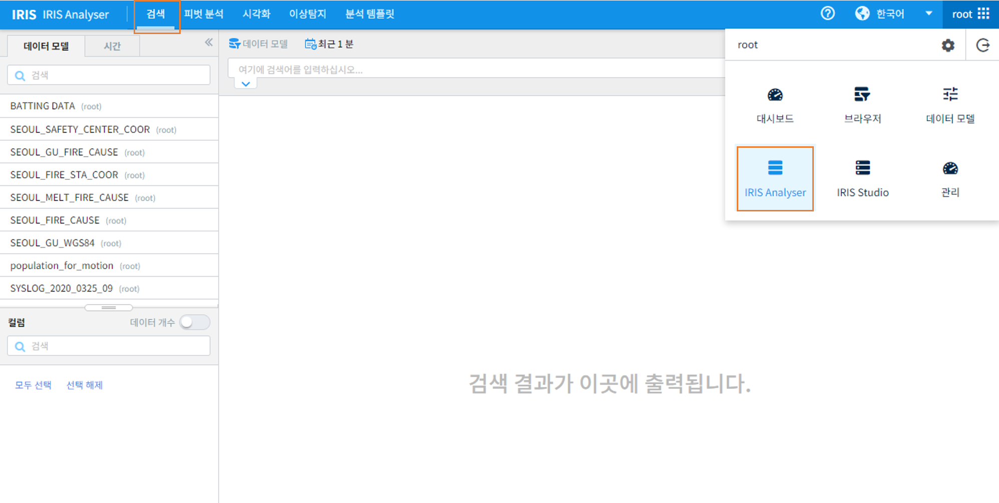
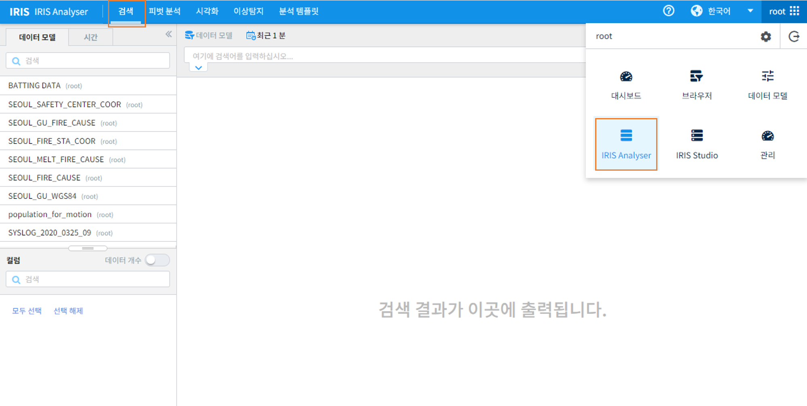

1. 검색¶
IRIS의 기본 기능인 검색에 대한 활용법을 설명합니다. 사용자는 IRIS SaaS의 기초 데이터를 활용하여 조건을 설정하여 검색을 수행하고, 데이터를 샘플링하고, 검색 결과를 다른 프로세스(화면)로 전달 또는 파일로 다운로드 하는 내용을 학습할 수 있습니다.
검색 메뉴는 대메뉴의 〈IRIS Analyzer〉->〉검색’을 선택하여 진입합니다.
IRIS의 기본 기능인 검색에 대한 활용법을 설명합니다. 사용자는 IRIS SaaS의 기초 데이터를 활용하여 조건을 설정하여 검색을 수행하고, 데이터를 샘플링하고, 검색 결과를 다른 프로세스(화면)로 전달 또는 파일로 다운로드 하는 내용을 학습할 수 있습니다.
검색 메뉴는 대메뉴의 〈IRIS Analyzer〉->〉검색’을 선택하여 진입합니다.
